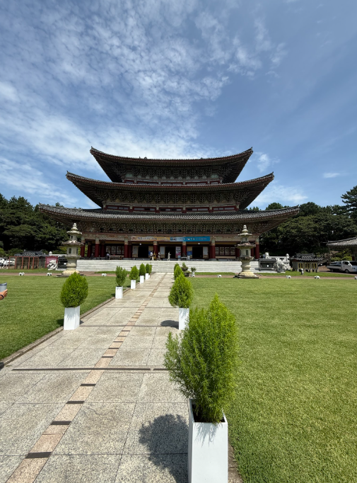
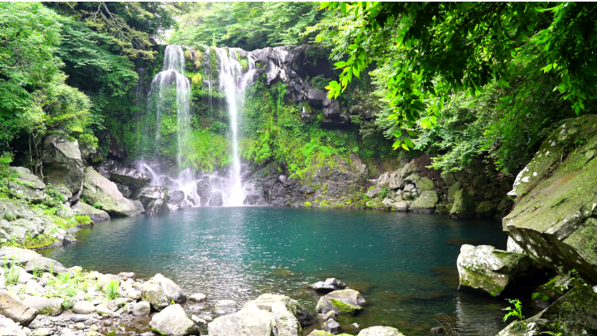
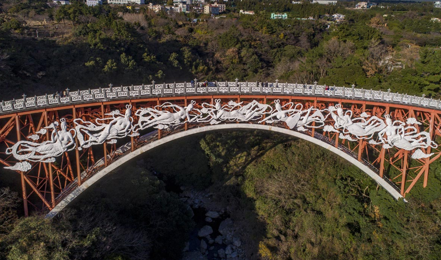
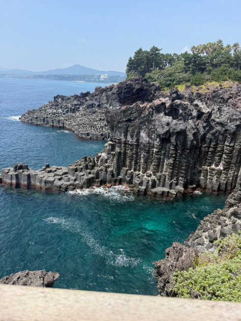

Jeju Island Gallery
This gallery shows photos from my summer trip to Jeju Island, South Korea. I wanted to include this page because and this trip gave me the chance to experience a new place, culture, and environment.
I traveled to South Korea to compete in the World Lacrosse Games. In this photo, I am playing for Team Puerto Rico, where we finished in 6th place.

This image shows the Yakcheonsa Temple which is used for various religious and cultural activities.

Jeju island has many beautiful waterfalls. The image above shows Cheojiyeon falls which is known for its three-tiered cascades.

This is an image of the Saeyon Bridge which connects the mainland of Jeju Island to the small, uninhabited Saeseom Island.

These rocks are known as columnar basalt cliffs. They are formed from the cooling of lava causing the rocks to contract.